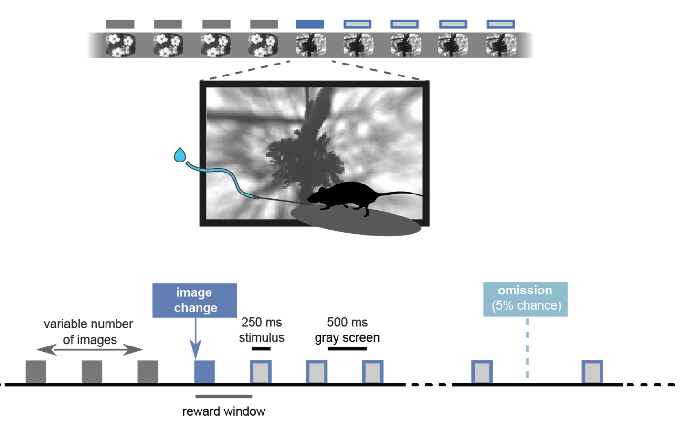
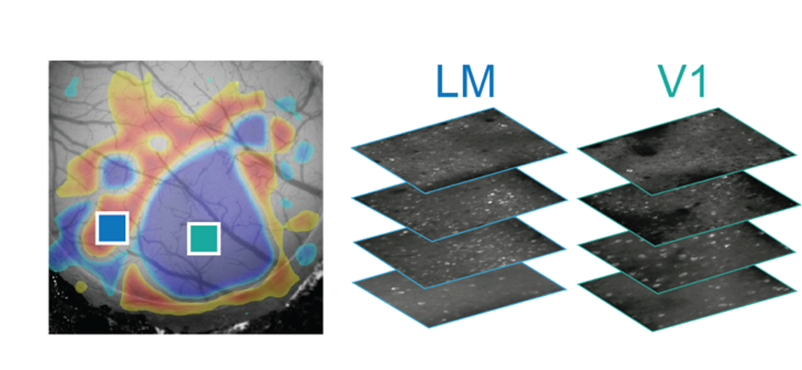
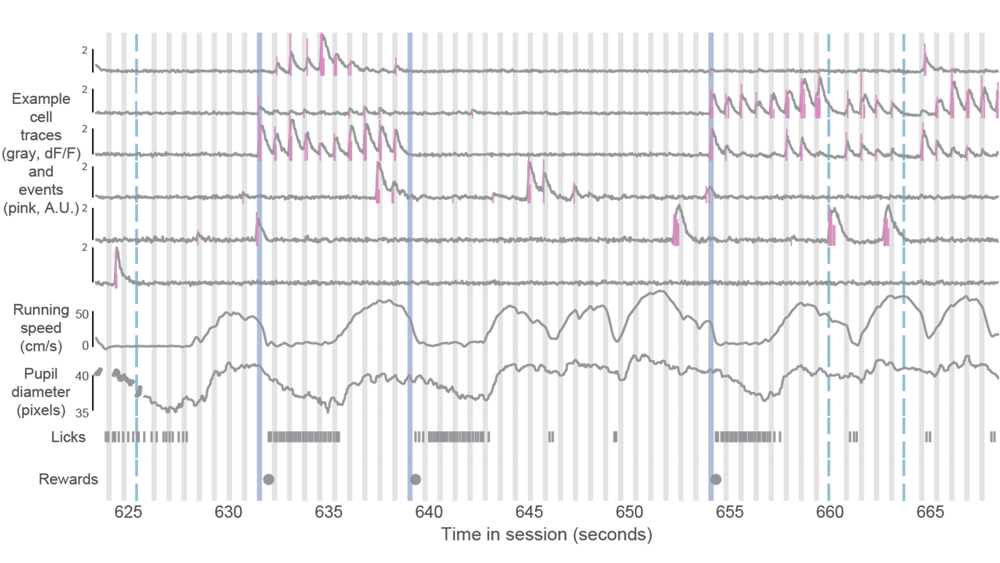
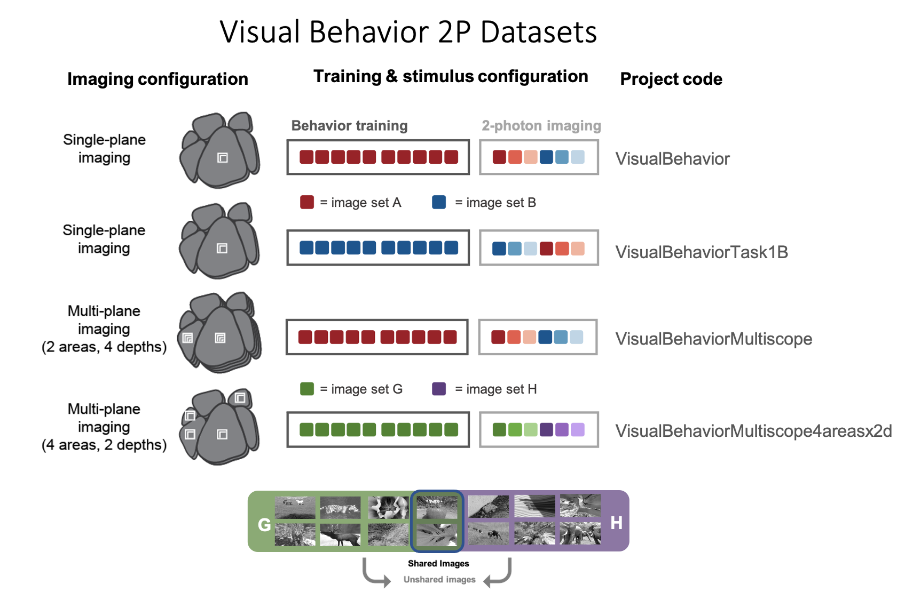
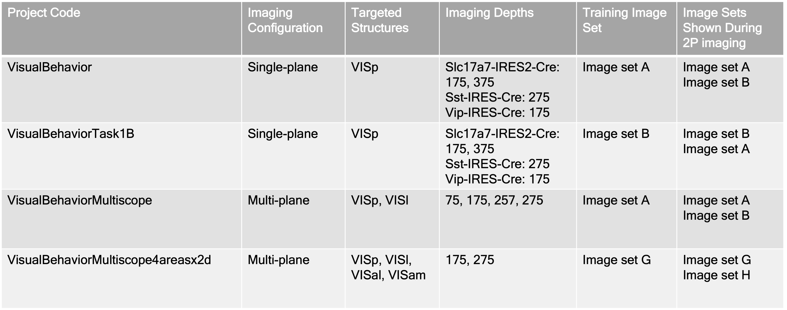
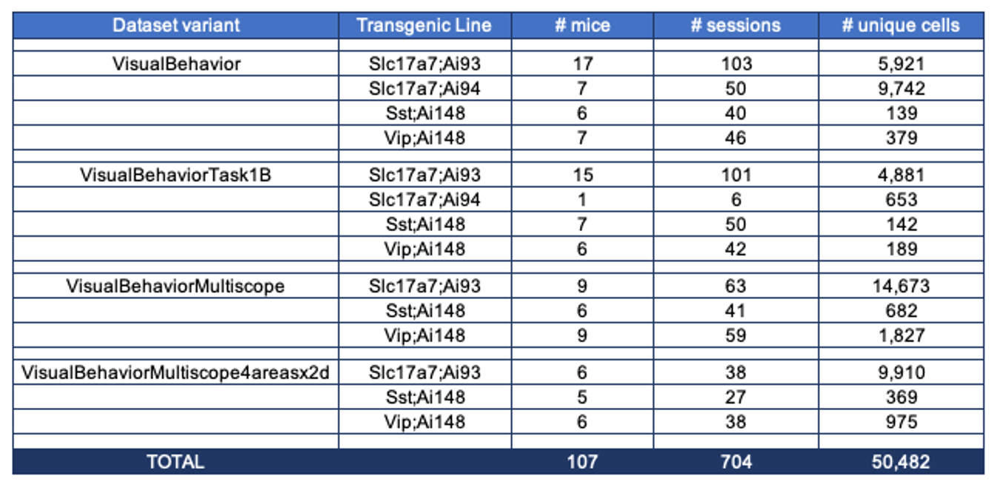
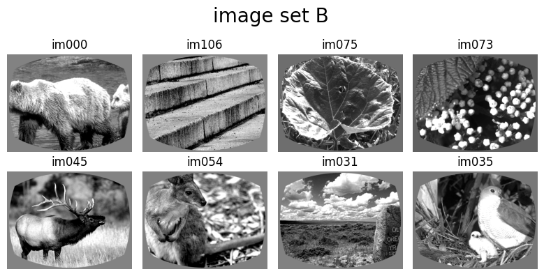
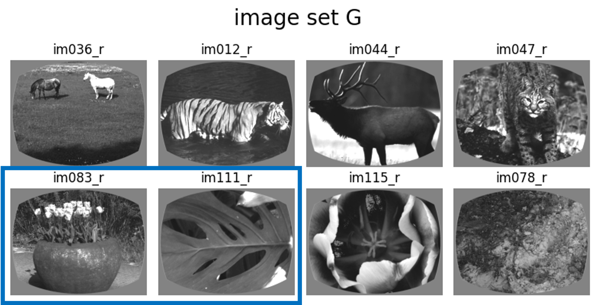
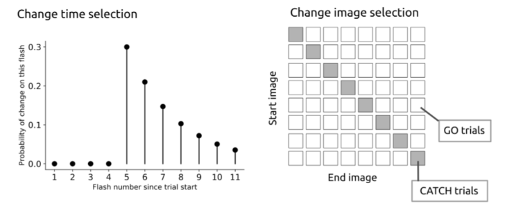
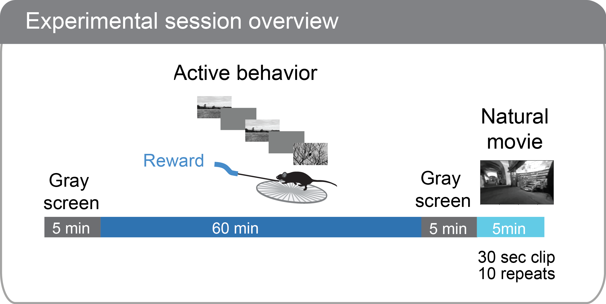

Visual Behavior Ophys Dataset Overview#
The Visual Behavior Ophys dataset was generated using in vivo 2-photon calcium imaging (also called optical physiology, or “ophys”) to measure the activity of genetically identified neurons in the visual cortex of mice performing a go/no-go visual change detection task. The same population of neurons was recorded over multiple days with varying sensory and behavioral contexts, including familiar and novel stimuli, and passive exposure sessions. This dataset can be used to evaluate the influence of experience, expectation, and task engagement on neural coding and dynamics in excitatory and inhibitory cell populations.
The full ophys dataset includes neural and behavioral measurements from 107 well-trained mice during 704 in vivo 2-photon imaging sessions from 326 unique fields of view, resulting in a total of 50,482 cortical neurons recorded.
The full behavioral training history of all imaged mice is also provided as part of the dataset, allowing investigation into task learning, behavioral strategy, and inter-animal variability. There are a total of 4,787 behavior sessions available for analysis.
Data for each experiment is packaged in Neurodata Without Borders (NWB) files that can be accessed via the AllenSDK using the VisualBehaviorOphysProjectCache.
Change Detection Task#

To learn about the task structure and behavioral training procedure, see the Visual Behavior Task section.
2-Photon Calcium Imaging#
Neural activity was measured as calcium fluorescence in cells expressing the genetically encoded calcium indicator GCaMP6 in populations of excitatory, Vip inhibitory, and Sst inhibitory neurons using the transgenic mouse lines listed below. Imaging took place between 75-400um below the cortical surface.

Single-plane imaging sessions were acquired using a Scientifica 2-photon microscope at 30Hz frame rate, with one imaging plane per session. Multi-plane imaging sessions were acquired at 11Hz frame rate using a modified Mesoscope 2-photon microscope, with 8 imaging planes recorded in each session. A multiplexing approach was used to enable pairs of imaging planes to be recorded nearly simultaneously. Paired planes were always in the same cortical area, but were located at different depths within the cortex.
As an example, one possible imaging configuration is shown below, with 4 imaging planes located in each of two visual areas, the primary visual cortex (VISp, also called V1) and a higher visual area (VISl, also called LM). A description of the imaging configuration used in each variant of the Visual Behavior Ophys dataset is provided below in the Dataset variants section.

In addition to fluorescence timeseries, animal behavior was recorded, including running speed, pupil diameter, lick times, and reward times. These measures allow evaluation of the relationship of neural activity to behavioral states such as arousal, locomotion, and task engagement, as well as choices and errors during task performance.

Experimental Design#
Each population of neurons was imaged repeatedly over multiple days under different sensory and behavioral contexts.
Mice initially perform the task under the microscope with the same set of images they observed during training, which have become highly familiar (each image is viewed thousands of times during training). Mice also undergo several sessions with a novel image set that they had not seen prior to the 2-photon imaging portion of the experiment.

Passive viewing sessions are interleaved between active behavior sessions. On passive days, mice are given their daily water before the session (and are thus satiated) and view the stimulus in open loop mode, with the lick spout retracted to indicate that rewards are not available. This allows investigation of the impact of motivation and attention on patterns of neural activity.
Session Types#
The session_type indicates whether a session was a behavior training session (session type beginning with TRAINING_), or a session that occurred under the 2-photon microscope (session type beginning with OPHYS_). Ophys sessions can be either active behavior, or passive viewing, as described above. Passive sessions always have _passive in the session_type. The image set shown during each session type is also included in the session_type name.
The number included in the session_type just after whether it is TRAINING_ or OPHYS_ indicates the order in which the session occurred in the overall training or imaging sequence. OPHYS_ session numbers 0-3 in the name are always using the same image set that was shown during behavioral training. OPHYS_ session numbers 4-6 are always using the new image set that was shown for the first time during 2-photon imaging.
To learn more about the differences in task parameters for different session_types, see the Visual Behavior Task page.
Data Structure#
There are many dimensions to this dataset and the data can be grouped in different ways depending on your question of interest. For example, to investigate inter-areal interactions, it would be important to identify all the unique imaging planes recorded in a single session. To examine changes in neural activity over days, identifying the unique sessions in which a single imaging plane was recorded is necessary. These different groupings have unique IDs in the allenSDK metadata tables.
The data collected in a single continuous recording is defined as an ophys session and receives a unique ophys_session_id. Each imaging plane in a given session is referred to as an ophys experiment and receives a unique ophys_experiment_id. For single-plane imaging, there is only one imaging plane (i.e. one ophys_experiment_id) per session. For multi-plane imaging, there can be up to 8 imaging planes (i.e. 8 ophys_experiment_ids) per session. Due to our strict QC process, not all multi-plane imaging sessions have exactly 8 experiments, as some imaging planes may not meet our data quality criteria.

We aimed to track the activity of single neurons across the session types described above by targeting the same population of neurons over multiple recording sessions, with only one session recorded per day for a given mouse. The collection of imaging sessions for a given population of cells, belonging to a single imaging plane measured across days, is called an ophys container. and receives a unique ophys_container_id. An ophys container can include between 3 and 11 separate sessions for that imaging plane. The session types available for a given container can vary, due to our selection criteria to ensure data quality. Mice imaged with the multi-plane 2-photon microscope can have multiple containers, one for each imaging plane recorded across multiple sessions.
Thus, each mouse can have one or more containers, each representing a unique imaging plane (experiment) that has been targeted on multiple recording days (sessions), under different behavioral and sensory conditions (session types).
Dataset Variants#
Different imaging configurations and stimulus sets were used in different groups of mice, resulting in four unique data variants (indicated by their project_code in SDK metadata tables and the schematic below). Two single-plane 2-photon datasets were acquired in the primary visual cortex (VISp). In the VisualBehavior single-plane 2P dataset, mice were trained with image set A and tested with image set B which was novel to the mice. In the VisualBehaviorTask1B single-plane 2P dataset, mice were trained with image set B and tested with image set A as the novel image set.

The VisualBehahviorMultiscope multi-plane dataset was acquired at 4 cortical depths in 2 visual areas (VISp & VISl) using image set A for training and image set B for novelty. Another multi-plane dataset, VisualBehaviorMultiscope4areasx2d, was acquired at 2 cortical depths in 4 visual areas (VISp, VISl, VISal, VISam). In this dataset, two of the images that became highly familiar during training with image set G were interleaved among novel images in image set H to evaluate the effect of novelty context and behavior state on learned stimulus responses.
Summary of dataset variants

Each of the transgenic mouse lines described above were imaged as part of each of these dataset variants. A summary of the numbers of mice, sessions, and uniquely identified neurons can be found here:

Note that not all neurons are active in all sessions. As a result, the number of neurons that are detected and matched across a given set of sessions is lower than the number of unique cells listed in the table here.
Visual Stimuli#
In each session, one of 4 different image sets was used. Image sets A and B had 8 distinct images in each set. Some mice learned the task with image set A and saw image set B as the novel set during 2-photon imaging (project codes VisualBehavior and VisualBehaviorMultiscope). Other mice learned the task with image set B and saw image set A as the novel set (project code VisualBehaviorTask1B).


The dataset variant indicated by the project code VisualBehaviorMultiscope4areasx2d used different image sets with a unique feature - two of the image were shared between the training image set, image set G, and the additional image set shown during 2-photon imaging, image set H. Accordingly, the 2 shared images between sets G and H were always familiar. The other 6 images in image set H were seen for the first time during 2-photon imaging and were novel to the mice.
Including a shared pair of images in image sets G and H allows for comparison of familiar image responses when they are interleaved with other familiar stimuli (in image set G) versus when they are interleaved with novel stimuli (in image set H) to evaluate context dependent influences on neural activity.
The shared images are highlighted in blue below.


Note: The Visual Behavior Neuropixels dataset also uses image sets G and H.
Each image set has 8 images, creating a total of 64 possible transitions between images during change trials. In between image changes, the same image was repeated, with a minimum of 4 repetitions of the same stimulus before another change could occur. Change times were drawn from an geometric distribution between 5 and 12 image flashes from the last change, or the last lick. Trials where the image changed are referred to as go trials, and trials where the image did not change are called catch trials.

See the VISUAL BEHAVIOR TASK page to learn more about the task structure and trial types.
Session Structure#
Each 2-photon imaging session consisted of 4 blocks:
a 5 minute period with gray screen to measure spontaneous activity
60 minutes of change detection task performance
another 5 minute period with gray screen
10 repeats of a 30 second movie clip that was shown in all 2P imaging sessions
The repeated movie stimulus at the end of each session serves to drive strong neural activity across the population to aid in cell segmentation and registration across sessions. It can also be used to analyze drift in neural representations over time.
